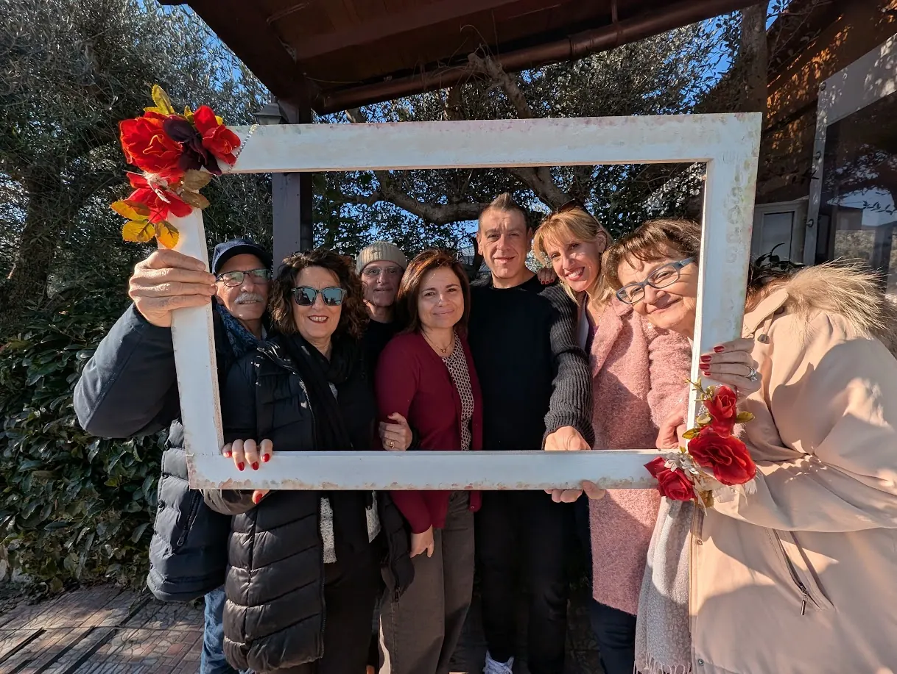
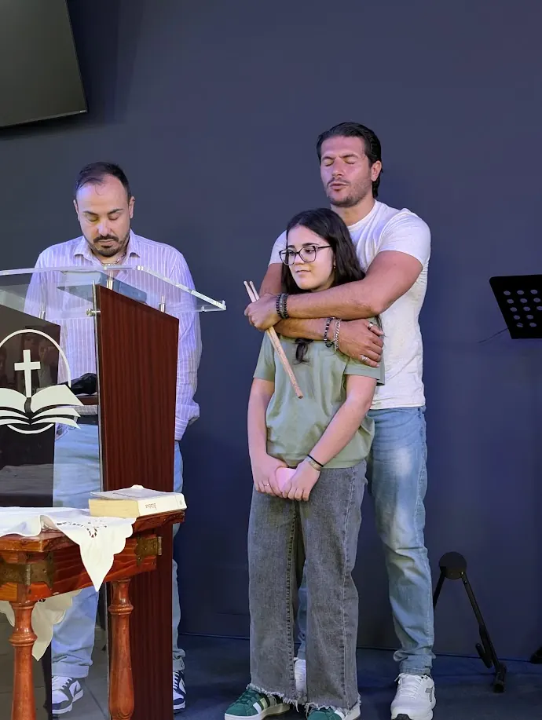
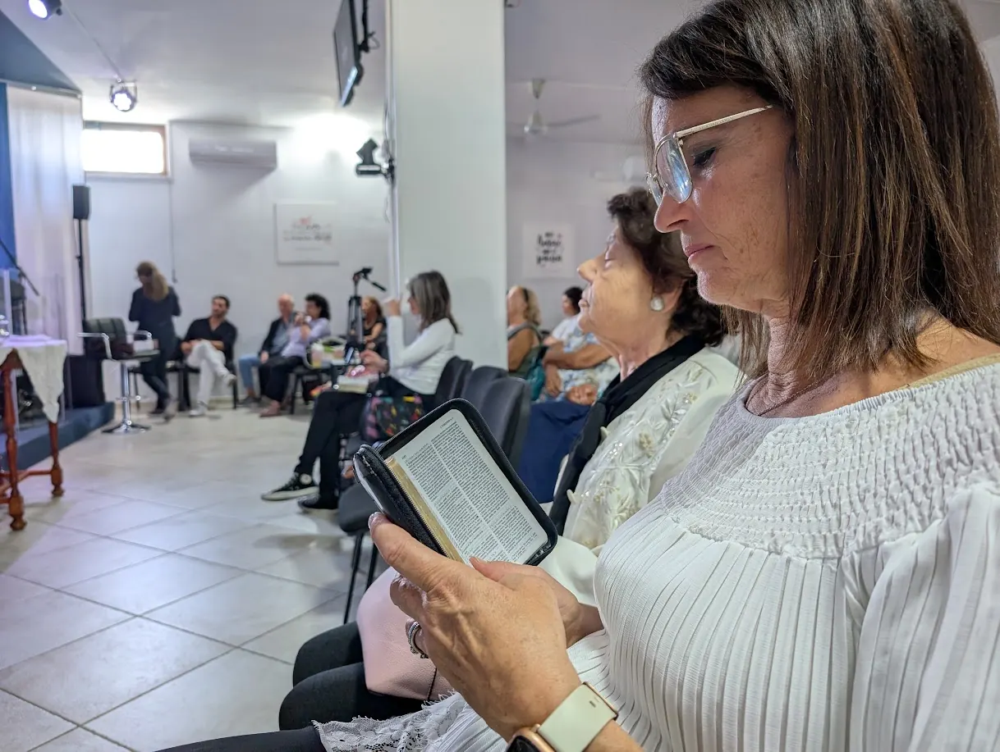
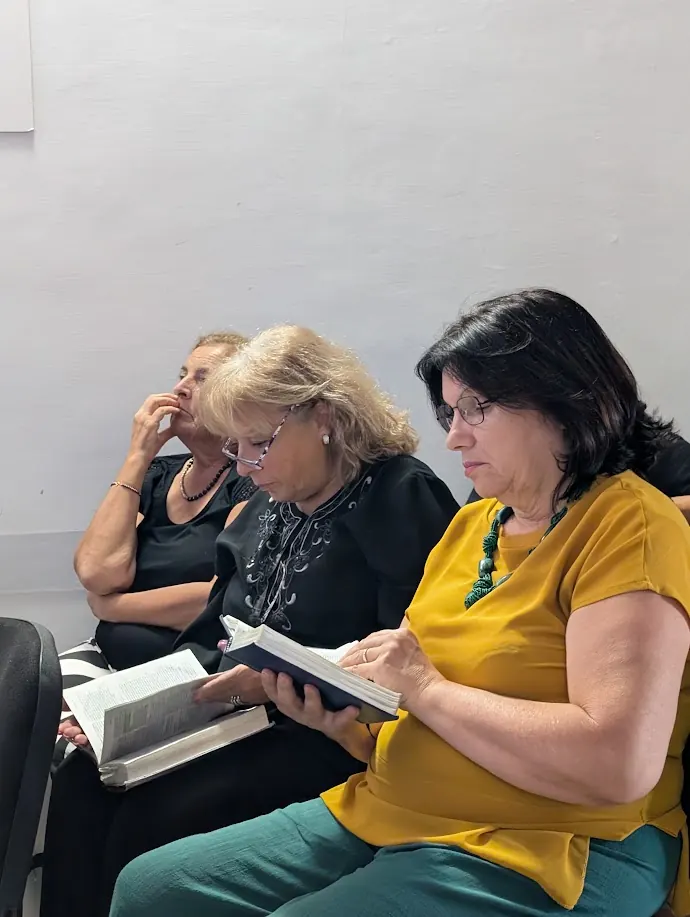

Persone normali, cambiate da un Dio straordinario.
Fiume di Vita è una chiesa evangelica di Pozzuoli. Una famiglia di famiglie, che vuole far conoscere l'amore di Gesù alla propria città.
Da un piccolo gruppo a una grande famiglia
Tutto è iniziato con poche persone che si riunivano per pregare e leggere la Bibbia insieme. Negli anni Dio ha aggiunto famiglie, ragazzi e bambini, e oggi siamo una comunità viva nel cuore dei Campi Flegrei.
Scrivi qui la storia di Fiume di Vita: quando e come è nata, i momenti importanti, cosa Dio ha fatto in questi anni.



Perché esistiamo
Come un fiume porta vita ovunque passa, desideriamo che l'amore di Gesù raggiunga ogni angolo della nostra città.
Amare Dio
Lo adoriamo con tutto il cuore, ogni domenica e ogni giorno della settimana.
Amarci a vicenda
Siamo una famiglia: ci conosciamo, ci aiutiamo e cresciamo insieme.
Crescere
Impariamo dalla Bibbia a somigliare sempre più a Gesù.
Servire la città
Vogliamo essere luce e aiuto concreto per Pozzuoli e per chi ha bisogno.
La nostra fede, in parole semplici
Siamo una chiesa evangelica: la Bibbia è il nostro fondamento e Gesù è il centro di tutto.
Da completare: rivedere la confessione di fede con i pastoriUn solo Dio
Crediamo in un solo Dio, eterno, che esiste in tre persone: il Padre, il Figlio e lo Spirito Santo. Creatore di tutte le cose, santo, giusto e pieno d'amore.
Matteo 28:19 · 2 Corinzi 13:13La Bibbia
Crediamo che la Bibbia sia la Parola di Dio, ispirata e affidabile, e la guida suprema per la fede e per la vita.
2 Timoteo 3:16-17Gesù Cristo
Crediamo che Gesù è il Figlio di Dio, fatto uomo. Ha vissuto senza peccato, è morto sulla croce al nostro posto ed è risorto il terzo giorno.
Giovanni 1:14 · 1 Corinzi 15:3-4La salvezza
Crediamo che la salvezza è un dono di Dio, ricevuto per grazia mediante la fede in Gesù, non per le nostre opere. Chi si pente e crede riceve il perdono e una vita nuova.
Efesini 2:8-9 · Romani 10:9Lo Spirito Santo
Crediamo che lo Spirito Santo abita in ogni credente, lo trasforma, gli dà forza per vivere per Dio e doni per servire gli altri.
Giovanni 14:16-17 · Galati 5:22-23La chiesa
Crediamo che la chiesa è la famiglia di Dio: persone salvate da Gesù che si riuniscono per adorare, crescere insieme e portare il Vangelo nel mondo.
Atti 2:42-47Battesimo e Cena del Signore
Crediamo nel battesimo dei credenti come testimonianza pubblica della fede, e nella Cena del Signore come memoria della morte di Gesù fino al Suo ritorno.
Matteo 28:19 · 1 Corinzi 11:23-26La speranza
Crediamo che Gesù tornerà, che ci sarà la risurrezione e che Dio farà nuove tutte le cose.
Apocalisse 21:4-5Chi guida la chiesa
Pastori e responsabili che servono la comunità con amore.
Da completare: nomi, ruoli e foto del teamNome Cognome
Pastore
Nome Cognome
Pastore
Nome Cognome
Anziano
Nome Cognome
Responsabile giovani
Il modo migliore per conoscerci? Vieni a trovarci.
Ogni domenica alle 10:15, con un caffè dalle 10:00.